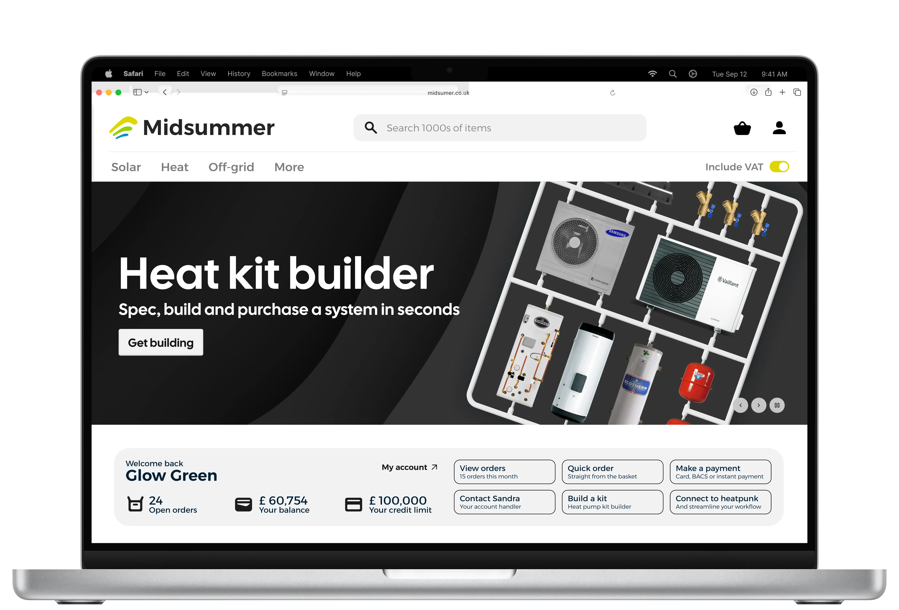
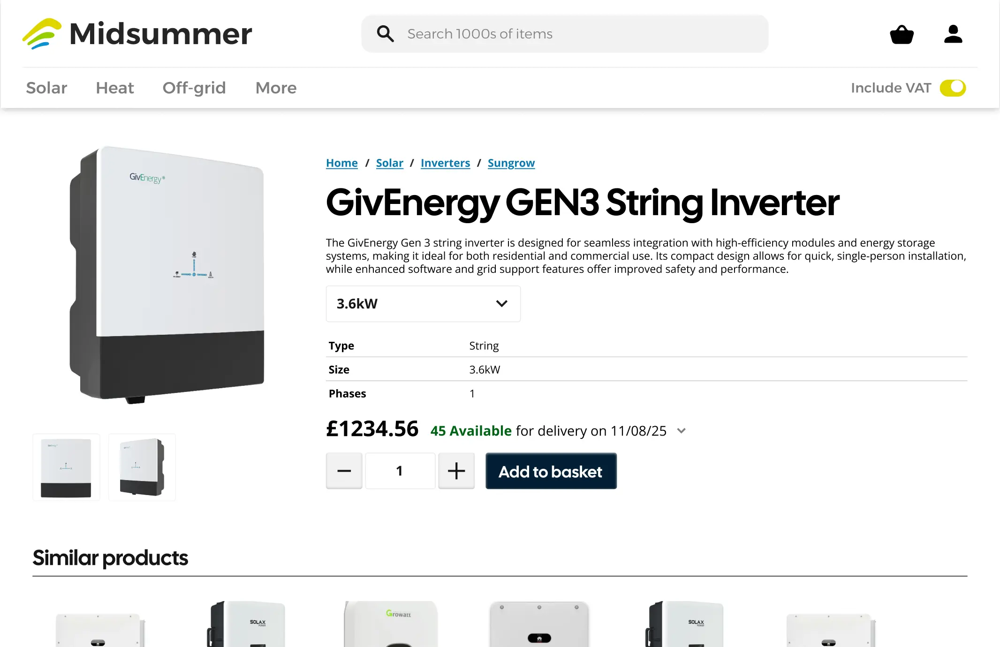
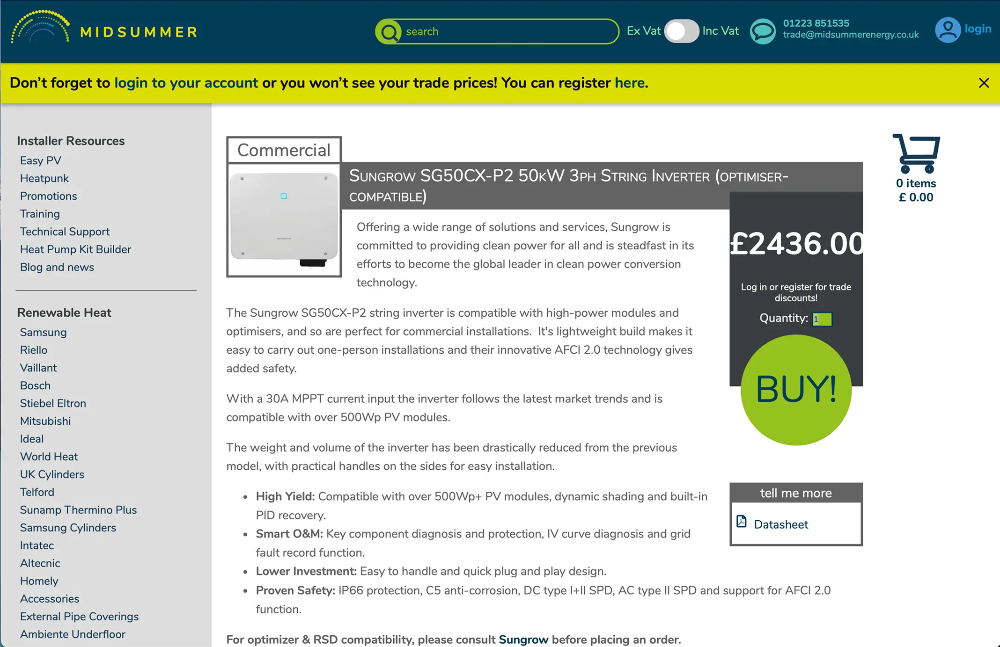
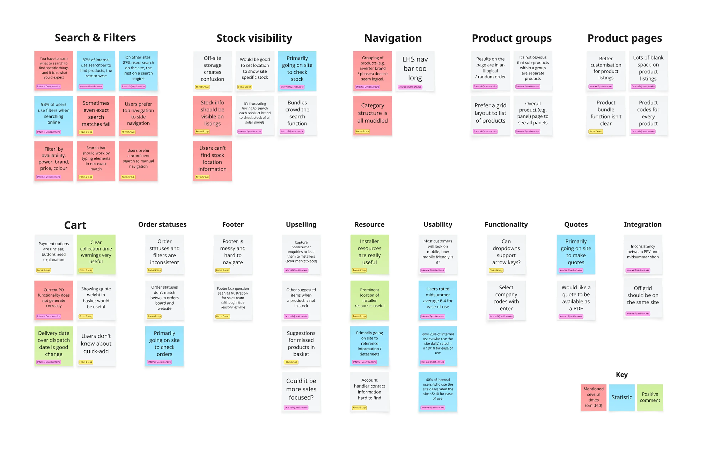
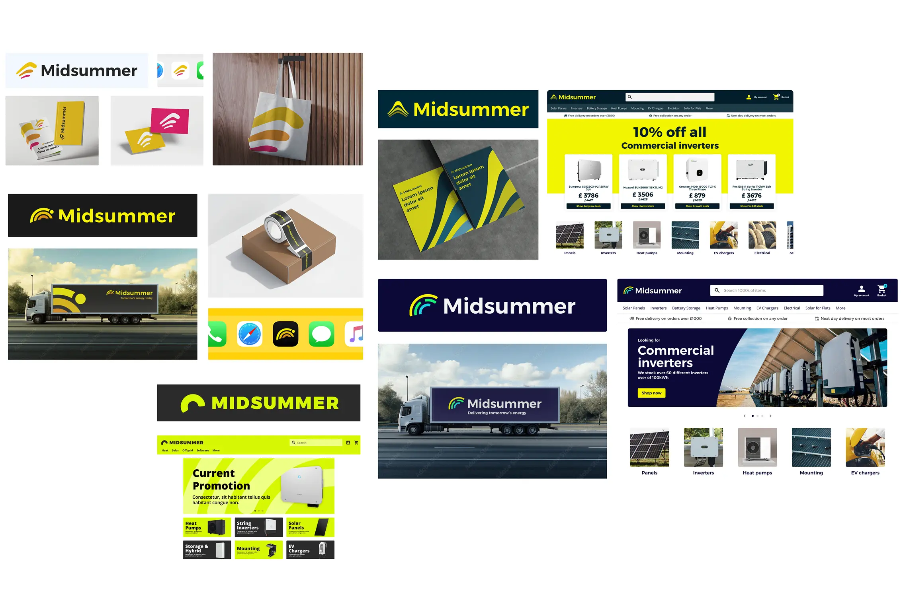
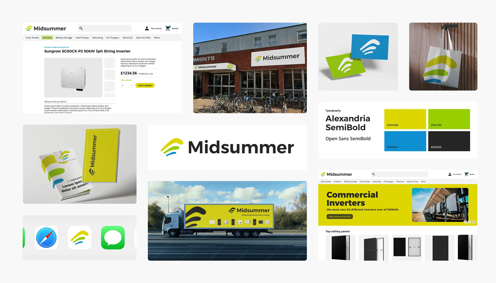
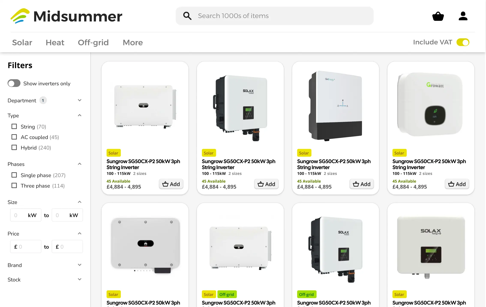

Let’s work together!
I’m currently open to new opportunities, whether freelance, contract, or full-time. If you think I’d be a good fit for your team or project, I’d love to hear from you.
A full brand and shop site redesign for Midsummer's B2B renewable energy platform, tackling weak navigation, hidden stock visibility, and a logo that struggled for attention, all within the constraints of the existing backend.
This project reached final proposal stage, three brand and site directions presented to the board, before being placed on hold due to developer and marketing resourcing. Everything below covers the process through to that final proposal.

Time to cart reduced
Stronger brand alignment
Clearer stock visibility
Improved navigation and discoverability
Midsummer supplies solar panels, inverters, heat pumps, and other renewable goods to installers across the UK and Ireland. The site had grown into a powerful tool over time, but its interface hadn't kept pace with modern e-commerce expectations, users increasingly compared it unfavourably to slicker platforms they shopped on elsewhere.
The scope covered brand identity, product discoverability, information architecture, and visual interface, all within one fixed constraint: the existing backend had to stay largely intact.


Internal workshops and a brand audit identified what was worth keeping, like the iconic sunpath in the logo, and where consistency and scalability were breaking down. Focus groups with internal sales staff, plus a customer survey, surfaced the clearest patterns:
Shareholders separately flagged weak brand visibility, bolder logo directions tested as noticeably easier to see than the existing mark.


Reviewed the existing logo, type, and colour contrast. It had low visibility on light and dark backgrounds, and took up disproportionate space for the impact it delivered.
Iterated bolder logo directions around the sunpath, addressing the visibility issue while keeping recognition intact.

Presented three final directions, two exploring new brand territory, one developing the existing identity further, to the Midsummer board, who selected an approach balancing clarity, heritage, and modernity.

Moved to top navigation, tested as easier to use and closer to typical online shopping conventions. Regrouped categories, added smarter persistent search and filtering (the most requested change), surfaced stock data in listing cards, and clarified product bundling.
This wasn't measured, since the project didn't ship, but two predictions follow directly from the research above. Search and filtering was the top request from customers and staff alike, so time to cart is the headline metric the redesign targets. Stock visibility was the second most common complaint, addressed directly in the new listing cards.
This project showed how much brand and UX intersect in a B2B context, where clarity and trust directly shape customer decisions. Working within backend constraints sharpened my prioritisation, since not every ideal solution was buildable within scope.
If revisiting, I'd push to test navigation variants with real customers earlier in the process, and make a stronger case for long-term investment in scalable component architecture, rather than only solving the immediate usability problems.